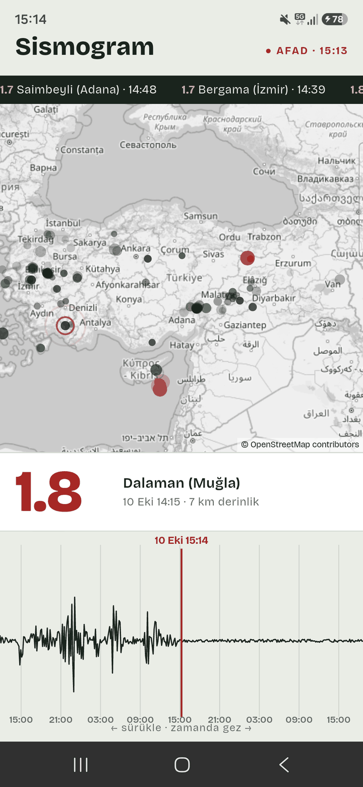
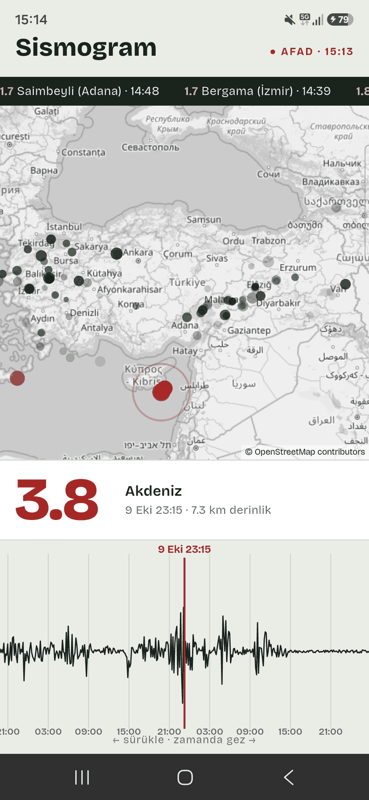

Bir haftalık depremleri sismograf kâğıdına çeviren uygulama. Her deprem, büyüklüğüyle orantılı bir tepe. Kâğıdı geri çekince harita o saate dönüyor. Veri AFAD'ın açık deprem servisinden geliyor.
01 — Ne yaptım
Üstte son depremlerin kayan bandı, ortada harita, altta sismograf kâğıdı. Kâğıdın ortasındaki kırmızı çizgi bir anı gösteriyor; harita o anın son 24 saatini çiziyor. Eski depremler soluyor, 3 ve üstü kırmızı. Çizginin yakınındaki en büyük deprem büyük puntoyla yazıyor.
Kâğıdı parmakla sürükleyip 7 gün geriye gidilebiliyor. Haritadaki bir noktaya dokununca kâğıt o depremin anına atlıyor.


02 — Neyi bilerek yapmadım
Uygulamanın tek fikri veriyi tabloya değil, insanların zaten tanıdığı bir görüntüye çevirmek. Liste ekranı bu fikri sulandırırdı.
03 — Bu hafta gösterdiğim teknik yetenek
Seride ilk kez harita ve ilk kez zamanda gezinme var. Dalga
CustomPainter ile elle çiziliyor, arkasındaki hesap saf Dart. Her
piksel bir an (7 dp = 1 saat); yüksekliği yakındaki depremlerin toplamı:
genlik(t) = 1,6 + Σ m^2,15 × 2,1 × e^−((t − tₑ) / 17 dk)²
04 — Aldığım karar
Google Maps Flutter'da en bilinen yol. Ama anahtar ve faturalandırma hesabı istiyor. Açık kaynak bir depoda, tek ekranlık bir harita için fazla yük.
Asıl soru: bu haritanın yalnız Google'da olan bir şeye ihtiyacı var mı?
Yok: gri bir altlık ve noktalar yetiyor. flutter_map açık kaynak ve harita parçalarını (karo) anahtarsız alıyor. İki sağlayıcıyı daha denedim: CARTO artık anahtar istiyor, Esri'nin lisansı hesapsız kullanımı açıkça kapsamıyor. OpenStreetMap'in kuralı açık: uygulama kendini tanıtacak, atıf görünecek, karolar önbelleğe alınacak. Üçünü de uyguladım.
Bedeli: harita etiketleri yerel dilde, komşu ülkelerde Rusça ve Arapça yer adları görünüyor. Gri tonun altında göze batmıyor.
05 — Nasıl doğruladım
Testler sismogram hesabında, AFAD istemcisinde (sahte sunucuyla), saat çevirisinde ve yer adı kısaltmada. AFAD'ın saatlerinin UTC olduğunu aynı depremleri USGS kayıtlarıyla karşılaştırarak doğruladım.
Sonra gerçek telefonda ölçtüm. Emülatörde bir kare 20 ms sürüyordu, akıcılık sınırının (16,7 ms) üstünde. Telefonda sürüklerken ortalama 3,8 ms çıktı; 394 karenin yalnız 2'si sınırı az aştı.
06 — Ne öğrendim
AFAD servisinde limit parametresi sonuçları sıralamadan önce
kesiyor. "Son 100 deprem" istediğimde en yeniler gelmiyordu. 7 günün tamamını
çekip sıralamayı uygulamada yapmak çözdü; zaten yalnız 220 KB.
İncele